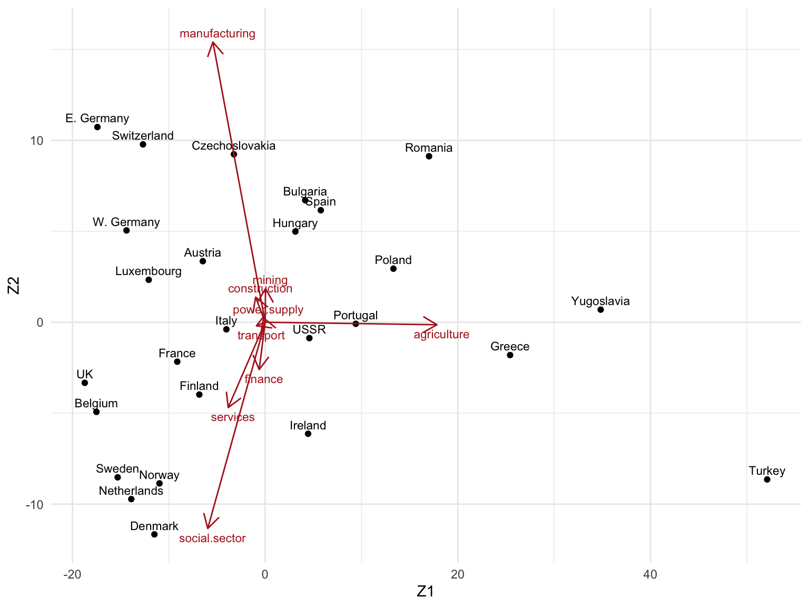
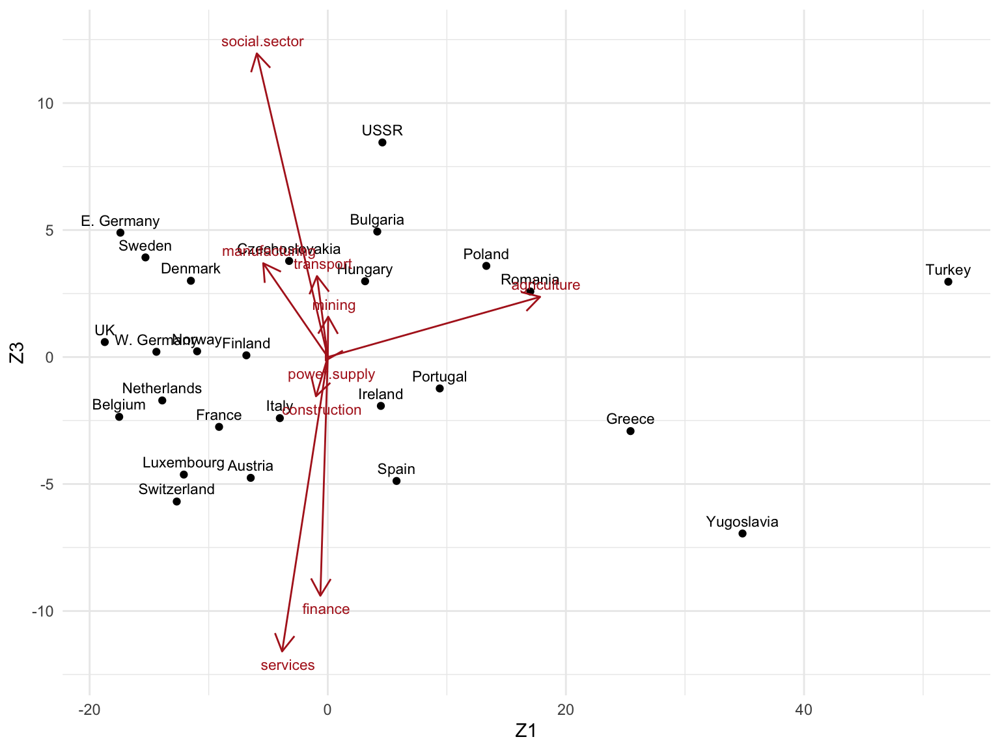

Analysis of High Dimensional Data - Lab 1
Adapted by Milan Malfait
15 Oct 2020
1 Introduction
The purpose of the following exercises is mainly to get more familiar with SVD and its applications, in particular Multidimensional Scaling (MDS). It is recommended to perform the exercises in an RMarkdown document.
For a brief introduction to RMarkdown, see Introduction to RMarkdown.
For an introduction to working with matrices in R, see Working with Matrices in R.
2 Multidimensional Scaling (MDS) demonstration
See course notes for background.
- We will use
UScitiesDdata as an example - Our goal is to use the distance matrix \(\mathbf D_X\) without knowledge of \(\mathbf X\) to represent the rows of \(\mathbf X\) in a low dimensional space, say 2D or 3D.
- We search for \(\mathbf V_k\) that orthogonally projects the rows of \(\mathbf X\) (\(\mathbf x^T_i\)) onto a \(k\)-dimensional space spanned by the columns of \(\mathbf V_k\). In fact we are looking for \(\mathbf Z_k\), such that \(\mathbf Z_k=\mathbf X \mathbf V_k\)
- But we do not know \(\mathbf X\), so how do we get \(\mathbf Z_k\)? We will use the \(\mathbf G_X\) (gram matrix) trick, mentioned in the course notes
2.1 Example: Distances between US cities
As an example, we will use the UScitiesD data set, which is part of base R. This data gives “straight line” distances (in km) between 10 cities in the US.
UScitiesD
#> Atlanta Chicago Denver Houston LosAngeles Miami NewYork
#> Chicago 587
#> Denver 1212 920
#> Houston 701 940 879
#> LosAngeles 1936 1745 831 1374
#> Miami 604 1188 1726 968 2339
#> NewYork 748 713 1631 1420 2451 1092
#> SanFrancisco 2139 1858 949 1645 347 2594 2571
#> Seattle 2182 1737 1021 1891 959 2734 2408
#> Washington.DC 543 597 1494 1220 2300 923 205
#> SanFrancisco Seattle
#> Chicago
#> Denver
#> Houston
#> LosAngeles
#> Miami
#> NewYork
#> SanFrancisco
#> Seattle 678
#> Washington.DC 2442 2329
class(UScitiesD)
#> [1] "dist"Note that the UScitiesD object is of class "dist", which is a special type of object to represent that it is a distance matrix (we’ll denote this as \(\mathbf{D}_X\)), i.e. the result from computing distances from an original matrix \(\mathbf{X}\). In this case, the original matrix \(\mathbf{X}\) was likely a matrix with a row for every city and columns specifying its coordinates. Note though that we don’t know \(\mathbf{X}\) exactly. Still, we can use the distance matrix and MDS to approximate a low-dimensional representation of \(\mathbf{X}\).
2.1.1 Exploring the distance matrix
We first convert the UScitiesD to a matrix for easier manipulation and calculation. Note that this creates a “symmetrical” matrix, with 0s on the diagonal (distance of a city to itself).
(dist_mx <- as.matrix(UScitiesD))
#> Found more than one class "dist" in cache; using the first, from namespace 'spam'
#> Also defined by 'BiocGenerics'
#> Found more than one class "dist" in cache; using the first, from namespace 'spam'
#> Also defined by 'BiocGenerics'
#> Atlanta Chicago Denver Houston LosAngeles Miami NewYork
#> Atlanta 0 587 1212 701 1936 604 748
#> Chicago 587 0 920 940 1745 1188 713
#> Denver 1212 920 0 879 831 1726 1631
#> Houston 701 940 879 0 1374 968 1420
#> LosAngeles 1936 1745 831 1374 0 2339 2451
#> Miami 604 1188 1726 968 2339 0 1092
#> NewYork 748 713 1631 1420 2451 1092 0
#> SanFrancisco 2139 1858 949 1645 347 2594 2571
#> Seattle 2182 1737 1021 1891 959 2734 2408
#> Washington.DC 543 597 1494 1220 2300 923 205
#> SanFrancisco Seattle Washington.DC
#> Atlanta 2139 2182 543
#> Chicago 1858 1737 597
#> Denver 949 1021 1494
#> Houston 1645 1891 1220
#> LosAngeles 347 959 2300
#> Miami 2594 2734 923
#> NewYork 2571 2408 205
#> SanFrancisco 0 678 2442
#> Seattle 678 0 2329
#> Washington.DC 2442 2329 0The dimensions of dist_mx:
And the rank of dist_mx
Q: is this matrix of full rank?
2.1.2 \(\mathbf{H}\) and \(\mathbf{G}_X\) matrices
Now let’s create the \(\mathbf H\) matrix.
\[ \mathbf{H} = \mathbf{I}_{n \times n} - \frac{1}{n} \mathbf{1}_n\mathbf{1}_n^T \]
n <- nrow(dist_mx)
# 11^T
(one_mat <- matrix(rep(1, n * n), ncol = n, nrow = n))
#> [,1] [,2] [,3] [,4] [,5] [,6] [,7] [,8] [,9] [,10]
#> [1,] 1 1 1 1 1 1 1 1 1 1
#> [2,] 1 1 1 1 1 1 1 1 1 1
#> [3,] 1 1 1 1 1 1 1 1 1 1
#> [4,] 1 1 1 1 1 1 1 1 1 1
#> [5,] 1 1 1 1 1 1 1 1 1 1
#> [6,] 1 1 1 1 1 1 1 1 1 1
#> [7,] 1 1 1 1 1 1 1 1 1 1
#> [8,] 1 1 1 1 1 1 1 1 1 1
#> [9,] 1 1 1 1 1 1 1 1 1 1
#> [10,] 1 1 1 1 1 1 1 1 1 1
## Alternatively: one_mat <- rep(1, n) %o% rep(1, n)
## Calculate H, diag(n) is the nxn identity matrix
(H <- diag(n) - (1/n) * one_mat)
#> [,1] [,2] [,3] [,4] [,5] [,6] [,7] [,8] [,9] [,10]
#> [1,] 0.9 -0.1 -0.1 -0.1 -0.1 -0.1 -0.1 -0.1 -0.1 -0.1
#> [2,] -0.1 0.9 -0.1 -0.1 -0.1 -0.1 -0.1 -0.1 -0.1 -0.1
#> [3,] -0.1 -0.1 0.9 -0.1 -0.1 -0.1 -0.1 -0.1 -0.1 -0.1
#> [4,] -0.1 -0.1 -0.1 0.9 -0.1 -0.1 -0.1 -0.1 -0.1 -0.1
#> [5,] -0.1 -0.1 -0.1 -0.1 0.9 -0.1 -0.1 -0.1 -0.1 -0.1
#> [6,] -0.1 -0.1 -0.1 -0.1 -0.1 0.9 -0.1 -0.1 -0.1 -0.1
#> [7,] -0.1 -0.1 -0.1 -0.1 -0.1 -0.1 0.9 -0.1 -0.1 -0.1
#> [8,] -0.1 -0.1 -0.1 -0.1 -0.1 -0.1 -0.1 0.9 -0.1 -0.1
#> [9,] -0.1 -0.1 -0.1 -0.1 -0.1 -0.1 -0.1 -0.1 0.9 -0.1
#> [10,] -0.1 -0.1 -0.1 -0.1 -0.1 -0.1 -0.1 -0.1 -0.1 0.9We can use \(\mathbf{H}\) to center our distance matrix:
(dist_mx_centered <- H %*% dist_mx)
#> Atlanta Chicago Denver Houston LosAngeles Miami NewYork SanFrancisco
#> [1,] -1065.2 -441.5 145.7 -402.8 507.8 -812.8 -575.9 616.7
#> [2,] -478.2 -1028.5 -146.3 -163.8 316.8 -228.8 -610.9 335.7
#> [3,] 146.8 -108.5 -1066.3 -224.8 -597.2 309.2 307.1 -573.3
#> [4,] -364.2 -88.5 -187.3 -1103.8 -54.2 -448.8 96.1 122.7
#> [5,] 870.8 716.5 -235.3 270.2 -1428.2 922.2 1127.1 -1175.3
#> [6,] -461.2 159.5 659.7 -135.8 910.8 -1416.8 -231.9 1071.7
#> [7,] -317.2 -315.5 564.7 316.2 1022.8 -324.8 -1323.9 1048.7
#> [8,] 1073.8 829.5 -117.3 541.2 -1081.2 1177.2 1247.1 -1522.3
#> [9,] 1116.8 708.5 -45.3 787.2 -469.2 1317.2 1084.1 -844.3
#> [10,] -522.2 -431.5 427.7 116.2 871.8 -493.8 -1118.9 919.7
#> Seattle Washington.DC
#> [1,] 588.1 -662.3
#> [2,] 143.1 -608.3
#> [3,] -572.9 288.7
#> [4,] 297.1 14.7
#> [5,] -634.9 1094.7
#> [6,] 1140.1 -282.3
#> [7,] 814.1 -1000.3
#> [8,] -915.9 1236.7
#> [9,] -1593.9 1123.7
#> [10,] 735.1 -1205.3
round(colMeans(dist_mx_centered), 8) # verify colMeans are 0
#> Atlanta Chicago Denver Houston LosAngeles
#> 0 0 0 0 0
#> Miami NewYork SanFrancisco Seattle Washington.DC
#> 0 0 0 0 0
## Note that using `scale(X, center = TRUE, scale = FALSE)` is much more efficient
## to center a matrix
## Here we use the approach with H because we need it further onWe will use this matrix to calculate \(\mathbf{G}_X\) (Gram matrix of \(\mathbf{X}\)).
\[ \mathbf{G}_X = -\frac{1}{2}\mathbf{H}\mathbf{D}_X\mathbf{H} = \mathbf{X}\mathbf{X}^T \]
Where \(\mathbf{D}_X\) is the matrix of squared distances. So we will first have to square our dist_mx.
## D_X = squared distance matrix
D_X <- dist_mx ^ 2
## Gram matrix
(G_X <- -1/2 * H %*% (D_X) %*% H)
#> [,1] [,2] [,3] [,4] [,5] [,6]
#> [1,] 537138.0 227674.7 -348122.18 198968.67 -808342.73 894857.1
#> [2,] 227674.7 262780.5 -174028.93 -134309.58 -593985.98 234414.3
#> [3,] -348122.2 -174028.9 235561.67 -92439.48 569636.62 -563061.1
#> [4,] 198968.7 -134309.6 -92439.48 352200.37 29298.47 516284.3
#> [5,] -808342.7 -593986.0 569636.62 29298.47 1594272.57 -1129628.1
#> [6,] 894857.1 234414.3 -563061.08 516284.27 -1129628.13 1617392.2
#> [7,] 696696.2 585085.0 -504420.43 -124220.58 -1498684.98 920343.3
#> [8,] -1005131.5 -580731.7 681440.37 -162952.28 1750891.82 -1541761.9
#> [9,] -1050183.2 -315384.4 658370.17 -550030.48 1399105.62 -1866872.1
#> [10,] 656444.9 488486.2 -462936.73 -32799.38 -1312563.28 918032.0
#> [,7] [,8] [,9] [,10]
#> [1,] 696696.2 -1005131.5 -1050183.2 656444.92
#> [2,] 585085.0 -580731.7 -315384.4 488486.17
#> [3,] -504420.4 681440.4 658370.2 -462936.73
#> [4,] -124220.6 -162952.3 -550030.5 -32799.38
#> [5,] -1498685.0 1750891.8 1399105.6 -1312563.28
#> [6,] 920343.3 -1541761.9 -1866872.1 918032.02
#> [7,] 1415758.5 -1583181.2 -1129542.9 1222167.17
#> [8,] -1583181.2 2027920.1 1845927.9 -1432421.53
#> [9,] -1129542.9 1845927.9 2123619.7 -1115010.23
#> [10,] 1222167.2 -1432421.5 -1115010.2 1070600.872.1.3 The SVD
We can now compute the SVD of the Gram matrix and use it to project our original matrix \(\mathbf{X}\) (which is still unknown to us!) into a lower dimensional space while preserving the Euclidean distances as well as possible. This is the essence of MDS.
## singular value decomposition on gram matrix
Gx_svd <- svd(G_X)
## Use `str` to explore structure of the SVD object
str(Gx_svd)
#> List of 3
#> $ d: num [1:10] 9582144 1686820 35479 8157 5468 ...
#> $ u: num [1:10, 1:10] -0.2322 -0.1234 0.1556 -0.0522 0.3889 ...
#> $ v: num [1:10, 1:10] -0.2322 -0.1234 0.1556 -0.0522 0.3889 ...Components of the Gx_svd object:
Gx_svd$d: diagonal elements of the \(\mathbf{\Delta}\) matrix, to recreate the matrix, use thediag()functionGx_svd$u: the matrix \(\mathbf{U}\) of left singular vectorsGx_svd$v: the matrix \(\mathbf{V}\) of right singular vectors
2.1.4 Truncated SVD and projection into lower dimensional space
The truncated SVD from the Gram matrix can be used to find projections \(Z_k\) of \(\mathbf{X}\) in a lower dimensional space. Here we will use \(k = 2\).
# k=2 approximation
k <- 2
Uk <- Gx_svd$u[, 1:k]
delta_k <- diag(Gx_svd$d[1:k])
Zk <- Uk %*% sqrt(delta_k)
rownames(Zk) <- colnames(D_X)
colnames(Zk) <- c("Z1", "Z2")
Zk
#> Z1 Z2
#> Atlanta -718.7594 142.99427
#> Chicago -382.0558 -340.83962
#> Denver 481.6023 -25.28504
#> Houston -161.4663 572.76991
#> LosAngeles 1203.7380 390.10029
#> Miami -1133.5271 581.90731
#> NewYork -1072.2357 -519.02423
#> SanFrancisco 1420.6033 112.58920
#> Seattle 1341.7225 -579.73928
#> Washington.DC -979.6220 -335.47281
# Plotting Zk in 2-D
## Using base R
# plot(Zk, type = "n", xlab = "Z1", ylab = "Z2", xlim = c(-1500, 1500))
# text(Zk, rownames(Zk), cex = 1.25)
## Using ggplot, by first converting Zk to a tibble
Zk %>%
# create tibble and change rownames to column named "city"
as_tibble(rownames = "city") %>%
ggplot(aes(Z1, Z2, label = city)) +
geom_point() +
# adding the city names as label
geom_text(nudge_y = 50) +
# setting limits of the x-axis to center the plot around 0
xlim(c(-1500, 1500)) +
ggtitle("MDS plot of the UScitiesD data") +
theme_minimal()
What can you say about the plot? Think about the real locations of these cities on a map of the US.
Answer
\(Z_1\) can be interpreted as the longitude, i.e. the East-West position. \(Z_2\) reflects the latitude, or the North-South position.2.2 The short way
The calculations above demonstrate how MDS works and what the underlying components are. However, in a real data analysis, one would typically not go through all the hassle of calculating all the intermediate steps. Fortunately, the MDS is already implemented in base R (in the stats package).
So the whole derivation we did above can be reproduced with a single line of code, using the cmdscale function (see ?cmdscale for details).
## Calculate MDS in 2 dimensions from distance matrix
(us_mds <- cmdscale(UScitiesD, k = 2))
#> [,1] [,2]
#> Atlanta -718.7594 142.99427
#> Chicago -382.0558 -340.83962
#> Denver 481.6023 -25.28504
#> Houston -161.4663 572.76991
#> LosAngeles 1203.7380 390.10029
#> Miami -1133.5271 581.90731
#> NewYork -1072.2357 -519.02423
#> SanFrancisco 1420.6033 112.58920
#> Seattle 1341.7225 -579.73928
#> Washington.DC -979.6220 -335.47281
colnames(us_mds) <- c("Z1", "Z2")
## Plot MDS
us_mds %>%
as_tibble(rownames = "city") %>%
ggplot(aes(Z1, Z2, label = city)) +
geom_point() +
geom_text(nudge_y = 50) +
xlim(c(-1500, 1500)) +
theme_minimal()
Which gives us the same result as before (which is a good check that we didn’t make mistakes!).
3 Exercises
3.1 Cheese data
Data prep
Read in the cheese data, which characterizes 30 cheeses on various metrics.
cheese <- read_csv("https://github.com/statOmics/HDA2020/raw/data/cheese.csv",
col_types = "idddd")
cheeseQ: what is the dimensionality of this data?
Answer
A: 4, since we have 4 features (the first column is just an identifier for the observation, so we don’t regard this as a feature).
Convert the cheese table to a matrix for easier calculations. We will drop the first column (as it’s not a feature) and instead use it to create rownames.
cheese_mx <- as.matrix(cheese[, -1])
rownames(cheese_mx) <- paste("case", cheese$Case, sep = "_")
cheese_mx
#> taste Acetic H2S Lactic
#> case_1 12.3 4.543 3.135 0.86
#> case_2 20.9 5.159 5.043 1.53
#> case_3 39.0 5.366 5.438 1.57
#> case_4 47.9 5.759 7.496 1.81
#> case_5 5.6 4.663 3.807 0.99
#> case_6 25.9 5.697 7.601 1.09
#> case_7 37.3 5.892 8.726 1.29
#> case_8 21.9 6.078 7.966 1.78
#> case_9 18.1 4.898 3.850 1.29
#> case_10 21.0 5.242 4.174 1.58
#> case_11 34.9 5.740 6.142 1.68
#> case_12 57.2 6.446 7.908 1.90
#> case_13 0.7 4.477 2.996 1.06
#> case_14 25.9 5.236 4.942 1.30
#> case_15 54.9 6.151 6.752 1.52
#> case_16 40.9 6.365 9.588 1.74
#> case_17 15.9 4.787 3.912 1.16
#> case_18 6.4 5.412 4.700 1.49
#> case_19 18.0 5.247 6.174 1.63
#> case_20 38.9 5.438 9.064 1.99
#> case_21 14.0 4.564 4.949 1.15
#> case_22 15.2 5.298 5.220 1.33
#> case_23 32.0 5.455 9.242 1.44
#> case_24 56.7 5.855 10.199 2.01
#> case_25 16.8 5.366 3.664 1.31
#> case_26 11.6 6.043 3.219 1.46
#> case_27 26.5 6.458 6.962 1.72
#> case_28 0.7 5.328 3.912 1.25
#> case_29 13.4 5.802 6.685 1.08
#> case_30 5.5 6.176 4.787 1.25Check rank of cheese_mx and center the matrix.
qr(cheese_mx)$rank
#> [1] 4
# Centering the data matrix
n <- nrow(cheese_mx)
cheese_H <- diag(n) - 1 / n * matrix(1, ncol = n, nrow = n)
cheese_centered <- cheese_H %*% as.matrix(cheese_mx)
## Again we use H here because we use it for some exercises later on
## In real-life applications using the `scale` function would be more appropriateTasks
Note: no need for mathematical derivations, just verify code-wise in R.
We obtained the column-centered data matrix \(\mathbf{X}\) after multiplying the original matrix with
\[ \mathbf{H} = \mathbf{I} - \frac{1}{n} \mathbf{1}\mathbf{1}^T \]
1. Show that \(\mathbf{X}\) (here: cheese_centered) is indeed column-centered (and not row-centered)
Solution
# X is indeed column-centered:
round(colMeans(cheese_centered), 14) ## practically zero
#> taste Acetic H2S Lactic
#> 0 0 0 0
# but it is not row-centered:
rowMeans(cheese_centered)
#> [1] -4.144283333 -1.195783333 3.489716667 6.387466667 -5.588783333
#> [6] 0.718216667 3.948216667 0.077216667 -2.319283333 -1.354783333
#> [11] 2.761716667 9.009716667 -7.045533333 -0.009283333 7.976966667
#> [16] 5.294466667 -2.914033333 -4.853283333 -1.591033333 4.494216667
#> [21] -3.188033333 -2.591783333 2.680466667 9.337216667 -2.568783333
#> [26] -3.773283333 1.056216667 -6.556283333 -2.612033333 -4.9255333332. Verify that whenever \(\mathbf{X}\) is column-centered, the equality \(\mathbf{HX = X}\) holds
3. Perform an SVD on cheese_centered, and store the matrices \(\mathbf{U}\), \(\mathbf{V}\) and \(\mathbf{\Delta}\) as separate objects
4. Show that \(\mathbf{u_1}\) is a normalized vector; show the same for \(\mathbf{u_2}\). Show that \(\mathbf{u_1}\) and \(\mathbf{u_2}\) are orthogonal vectors. Then show the orthonormality of all vectors \(\mathbf{u_j}\) in a single calculation (using the matrix \(\mathbf{U}\)). Similarly, show the orthonormality of all vectors \(\mathbf{v_j}\) in a single calculation (using the matrix \(\mathbf{V}\)).
Solution
# Verifying orthonormality
# ------------------------
# The vectors u1 and u2 are orthonormal
t(U[, 1]) %*% U[, 1]
#> [,1]
#> [1,] 1
t(U[, 2]) %*% U[, 2]
#> [,1]
#> [1,] 1
t(U[, 1]) %*% U[, 2]
#> [,1]
#> [1,] 2.775558e-17
# Verifying that U forms an orthonormal basis in one step:
t(U) %*% U # computational imperfections
#> [,1] [,2] [,3] [,4]
#> [1,] 1.000000e+00 2.775558e-17 -1.942890e-16 3.469447e-17
#> [2,] 2.775558e-17 1.000000e+00 -2.081668e-17 6.938894e-18
#> [3,] -1.942890e-16 -2.081668e-17 1.000000e+00 8.326673e-17
#> [4,] 3.469447e-17 6.938894e-18 8.326673e-17 1.000000e+00
round(t(U) %*% U, digits = 15)
#> [,1] [,2] [,3] [,4]
#> [1,] 1 0 0 0
#> [2,] 0 1 0 0
#> [3,] 0 0 1 0
#> [4,] 0 0 0 1
# Verifying that V forms an orthonormal basis:
t(V) %*% V # computational imperfections
#> [,1] [,2] [,3] [,4]
#> [1,] 1.000000e+00 2.168404e-19 9.107298e-18 1.734723e-18
#> [2,] 2.168404e-19 1.000000e+00 1.162265e-16 -4.163336e-17
#> [3,] 9.107298e-18 1.162265e-16 1.000000e+00 -1.387779e-16
#> [4,] 1.734723e-18 -4.163336e-17 -1.387779e-16 1.000000e+00
round(t(V) %*% V, digits = 15)
#> [,1] [,2] [,3] [,4]
#> [1,] 1 0 0 0
#> [2,] 0 1 0 0
#> [3,] 0 0 1 0
#> [4,] 0 0 0 15. Check that the SVD was performed correctly, i.e. calculate the matrix \(\mathbf{X}\) from the elements of the SVD.
Solution
There are 2 ways to do this
- Using the sum definition of the SVD \(\mathbf{X} = \sum_{j=1}^r \delta_j \mathbf{u}_j\mathbf{v}_j^T\)
# Calculating X via the sum definition of the SVD:
# ------------------------------------------------
## Initialize empty matrix
X_sum <- matrix(0, nrow = nrow(U), ncol = ncol(V))
## Compute sum by looping over columns
for (j in 1:ncol(U)) {
X_sum <- X_sum + (diag(D)[j] * U[, j] %*% t(V[, j]))
}- using the matrix notation of the SVD
\(\mathbf{X}=\mathbf{U}_{n\times n}\boldsymbol{\Delta}_{n\times p}\mathbf{V}^T_{p \times p}\)
# Calculating X via the SVD matrix multiplication:
# ------------------------------------------------
X_mult <- U %*% D %*% t(V)- Verify that the obtained results are identical to the matrix \(\mathbf{X}\).
6. Approximate the matrix \(\mathbf{\tilde{\mathbf{X}}}\), for \(k = 2\) using the truncated SVD.
Solution
Using the matrix notation of the SVD \(\tilde{\mathbf{X}}=\mathbf{U}_{n\times k}\boldsymbol{\Delta}_{k\times k}\mathbf{V}_{p \times k}^T\)
k <- 2
X_tilde <- U[, 1:k] %*% D[1:k,1:k] %*% t(V[,1:k])
X_tilde
#> [,1] [,2] [,3] [,4]
#> [1,] -12.239133 -0.473616046 -2.8890844 -0.22869032
#> [2,] -3.632893 -0.149296787 -0.9192007 -0.07036869
#> [3,] 14.466098 0.003193815 -0.5222165 0.11143994
#> [4,] 23.367068 0.343030388 1.5463259 0.27644233
#> [5,] -18.937322 -0.412170627 -2.2022031 -0.26233046
#> [6,] 1.362512 0.238584208 1.6362609 0.07850579
#> [7,] 12.762842 0.458129158 2.7598179 0.22827153
#> [8,] -2.629186 0.279768668 2.0779016 0.05976183
#> [9,] -6.434808 -0.335320743 -2.1294786 -0.14487077
#> [10,] -3.531065 -0.267124541 -1.7564651 -0.10322047
#> [11,] 10.368716 0.087369057 0.2274905 0.10415872
#> [12,] 32.669955 0.462076014 2.0380140 0.38149853
#> [13,] -23.836211 -0.552972271 -3.0136366 -0.33994737
#> [14,] 1.364965 -0.137217299 -1.0219832 -0.02873484
#> [15,] 30.366491 0.282301907 0.8531709 0.31258868
#> [16,] 16.368042 0.607820015 3.6828489 0.29854111
#> [17,] -8.636391 -0.341018561 -2.0868672 -0.16331822
#> [18,] -18.129963 -0.266973043 -1.2055849 -0.21472027
#> [19,] -6.532447 -0.005490492 0.2071824 -0.05147830
#> [20,] 14.366327 0.508218560 3.0537258 0.25481924
#> [21,] -10.538563 -0.211763797 -1.1009736 -0.14096055
#> [22,] -9.333559 -0.152667016 -0.7283467 -0.11488660
#> [23,] 7.461972 0.494423480 3.2161739 0.19812912
#> [24,] 32.165441 0.765561370 4.2036533 0.46426305
#> [25,] -7.731858 -0.358497140 -2.2445637 -0.16139578
#> [26,] -12.925926 -0.432844491 -2.5748303 -0.22230096
#> [27,] 1.972823 0.171717046 1.1403054 0.06408399
#> [28,] -23.831087 -0.408474088 -1.9917525 -0.29866628
#> [29,] -11.134642 0.049222629 0.7675071 -0.07102548
#> [30,] -19.028198 -0.245969372 -1.0231915 -0.21558848- Compare the obtained results with the matrix \(\mathbf{X}\) (
cheese_centered). Just at a first glance, does it seem that \(\mathbf{\tilde{X}}\) is a good approximation of \(\mathbf{X}\)?
7. SVD and linear regression: perform a linear regression using SVD to estimate the effects of the Acetic, H2S and Lactic variables on the taste.
Note: we cannot use the SVD from before as this was calculated from the complete cheese table, also including the taste column, which is the response variable of interest here. Instead, we need to create a new design matrix \(\mathbf{X}\) containing the predictors and a separate vector \(\mathbf{y}\) containing the response.
cheese_y <- cheese$taste
cheese_design <- cbind(Intercept = 1, cheese[c("Acetic", "H2S", "Lactic")])Also perform the regression with lm and compare the results.
Solution
## Fit with lm
lm_fit <- lm(taste ~ Acetic + H2S + Lactic, data = cheese)
## Fit with SVD
design_svd <- svd(cheese_design)
svd_coef <- design_svd$v %*% diag(1/design_svd$d) %*% t(design_svd$u) %*% cheese_y
## Compare
cbind(
"lm" = coef(lm_fit),
"svd" = drop(svd_coef)
)
#> lm svd
#> (Intercept) -28.8767696 -28.8767696
#> Acetic 0.3277413 0.3277413
#> H2S 3.9118411 3.9118411
#> Lactic 19.6705434 19.67054343.2 Exercise: employment by industry in European countries
In this exercise we will focus on the interpretation of the biplot.
Data prep
The industries.txt file contains data on the distribution of employment between 9 industrial sectors, in 26 European countries. The dataset stems from the Cold-War era; the data are expressed as percentages. Read in the data and explore its contents.
You can read in the file with the following URL:
Solution
industries <- read_delim(industries_url, delim = " ",
col_types = cols())
# Explore contents
industriesglimpse(industries)
#> Rows: 26
#> Columns: 10
#> $ country [3m[90m<chr>[39m[23m "Belgium", "Denmark", "France", "W. Germany", "Ireland"…
#> $ agriculture [3m[90m<dbl>[39m[23m 3.3, 9.2, 10.8, 6.7, 23.2, 15.9, 7.7, 6.3, 2.7, 12.7, 1…
#> $ mining [3m[90m<dbl>[39m[23m 0.9, 0.1, 0.8, 1.3, 1.0, 0.6, 3.1, 0.1, 1.4, 1.1, 0.4, …
#> $ manufacturing [3m[90m<dbl>[39m[23m 27.6, 21.8, 27.5, 35.8, 20.7, 27.6, 30.8, 22.5, 30.2, 3…
#> $ power.supply [3m[90m<dbl>[39m[23m 0.9, 0.6, 0.9, 0.9, 1.3, 0.5, 0.8, 1.0, 1.4, 1.4, 1.3, …
#> $ construction [3m[90m<dbl>[39m[23m 8.2, 8.3, 8.9, 7.3, 7.5, 10.0, 9.2, 9.9, 6.9, 9.0, 7.4,…
#> $ services [3m[90m<dbl>[39m[23m 19.1, 14.6, 16.8, 14.4, 16.8, 18.1, 18.5, 18.0, 16.9, 1…
#> $ finance [3m[90m<dbl>[39m[23m 6.2, 6.5, 6.0, 5.0, 2.8, 1.6, 4.6, 6.8, 5.7, 4.9, 5.5, …
#> $ social.sector [3m[90m<dbl>[39m[23m 26.6, 32.2, 22.6, 22.3, 20.8, 20.1, 19.2, 28.5, 28.3, 1…
#> $ transport [3m[90m<dbl>[39m[23m 7.2, 7.1, 5.7, 6.1, 6.1, 5.7, 6.2, 6.8, 6.4, 7.0, 7.6, …
summary(industries)
#> country agriculture mining manufacturing
#> Length:26 Min. : 2.70 Min. :0.100 Min. : 7.90
#> Class :character 1st Qu.: 7.70 1st Qu.:0.525 1st Qu.:23.00
#> Mode :character Median :14.45 Median :0.950 Median :27.55
#> Mean :19.13 Mean :1.254 Mean :27.01
#> 3rd Qu.:23.68 3rd Qu.:1.800 3rd Qu.:30.20
#> Max. :66.80 Max. :3.100 Max. :41.20
#> power.supply construction services finance
#> Min. :0.1000 Min. : 2.800 Min. : 5.20 Min. : 0.500
#> 1st Qu.:0.6000 1st Qu.: 7.525 1st Qu.: 9.25 1st Qu.: 1.225
#> Median :0.8500 Median : 8.350 Median :14.40 Median : 4.650
#> Mean :0.9077 Mean : 8.165 Mean :12.96 Mean : 4.000
#> 3rd Qu.:1.1750 3rd Qu.: 8.975 3rd Qu.:16.88 3rd Qu.: 5.925
#> Max. :1.9000 Max. :11.500 Max. :19.10 Max. :11.300
#> social.sector transport
#> Min. : 5.30 Min. :3.200
#> 1st Qu.:16.25 1st Qu.:5.700
#> Median :19.65 Median :6.700
#> Mean :20.02 Mean :6.546
#> 3rd Qu.:24.12 3rd Qu.:7.075
#> Max. :32.40 Max. :9.400Create data matrix \(\mathbf{X}\).
# Create matrix without first column ("country", which will be used for rownames)
indus_X <- as.matrix(industries[, -1])
rownames(indus_X) <- industries$country
# Check the dimensionality
dim(indus_X)
#> [1] 26 9
# and the rank
qr(indus_X)$rank
#> [1] 9
# n will be used subsequently
n <- nrow(indus_X)Tasks
1. Perform a truncated SVD for \(k=2\), and construct the biplot accordingly.
Solution
# Centering the data matrix first
# H <- diag(n) - 1 / n * matrix(1, ncol = n, nrow = n)
# indus_centered <- H %*% as.matrix(indus_X)
indus_centered <- scale(indus_X, scale = FALSE)# Perform SVD
indus_svd <- svd(indus_centered)
str(indus_svd)
#> List of 3
#> $ d: num [1:9] 87.1 33.05 19.5 11.87 7.82 ...
#> $ u: num [1:26, 1:9] -0.2011 -0.132 -0.1048 -0.1653 0.0512 ...
#> $ v: num [1:9, 1:9] 0.89176 0.00192 -0.27127 -0.00839 -0.04959 ...
# Extract singular vectors for k = 2 and calculate k=2 projection Zk
k <- 2
Uk <- indus_svd$u[ , 1:k]
Dk <- diag(indus_svd$d[1:k])
Vk <- indus_svd$v[, 1:k]
rownames(Vk) <- colnames(indus_X)
colnames(Vk) <- c("V1", "V2")
Zk <- Uk %*% Dk
rownames(Zk) <- industries$country
colnames(Zk) <- c("Z1", "Z2")
Zk
#> Z1 Z2
#> Belgium -17.516687 -4.92622849
#> Denmark -11.496688 -11.66176637
#> France -9.128686 -2.16828207
#> W. Germany -14.393424 5.04749385
#> Ireland 4.458174 -6.13156498
#> Italy -4.026684 -0.38889529
#> Luxembourg -12.089752 2.33236877
#> Netherlands -13.900455 -9.72359023
#> UK -18.728675 -3.33178946
#> Austria -6.471418 3.35662962
#> Finland -6.837047 -3.97634061
#> Greece 25.427083 -1.80467718
#> Norway -10.972019 -8.85877780
#> Portugal 9.403865 -0.08570061
#> Spain 5.774973 6.15867547
#> Sweden -15.311975 -8.52674423
#> Switzerland -12.683839 9.77920054
#> Turkey 52.115644 -8.64165980
#> Bulgaria 4.156791 6.70685051
#> Czechoslovakia -3.246127 9.23467980
#> E. Germany -17.415527 10.73233092
#> Hungary 3.135737 4.98695108
#> Poland 13.315709 2.94482700
#> Romania 17.011336 9.12523022
#> USSR 4.587043 -0.87197041
#> Yugoslavia 34.832648 0.69274975Biplot with ggplot2:
## Scale factor to draw Vk arrows (can be set arbitrarily)
scale_factor <- 20
## Create tibble with rownames in "country" column
as_tibble(Zk, rownames = "country") %>%
ggplot(aes(Z1, Z2)) +
geom_point() +
geom_text(aes(label = country), size = 3, nudge_y = 0.5) +
## Plot Singular vectors Vk
geom_segment(
data = as_tibble(Vk, rownames = "sector"),
aes(x = 0, y = 0, xend = V1 * scale_factor, yend = V2 * scale_factor),
arrow = arrow(length = unit(0.4, "cm")),
color = "firebrick"
) +
geom_text(
data = as_tibble(Vk, rownames = "sector"),
aes(V1 * scale_factor, V2 * scale_factor, label = sector),
nudge_x = 0.5, nudge_y = ifelse(Vk[, 2] >= 0, 0.5, -0.5),
color = "firebrick", size = 3
) +
theme_minimal()
Using base R:
# # Constructing the biplot for Z1 and Z2
# # -------------------------------------
plot(Zk[,1:2], type="n", xlim=c(-30,60), ylim=c(-15,15),
xlab="Z1", ylab="Z2")
text(Zk[,1:2], rownames(Zk), cex=0.9)
# alpha <- 1
alpha <- 20 # rescaling to get better visualisation
for(i in 1:9) {
arrows(0,0, alpha*Vk[i,1], alpha*Vk[i,2], length=0.2, col=2)
text(alpha*Vk[i,1], alpha*Vk[i,2], rownames(Vk)[i], col=2)
}
2. To see if we can learn more when retaining more dimensions, repeat the truncated SVD for \(k=3\). Construct two-dimensional biplots for:
- Z1 and Z3
- Z2 and Z3
Solution
No need to re-do SVD, just extract singular vectors for \(k=3\) from previous SVD.
# Extract singular vectors for k = 3 and calculate projection Zk
k <- 3
Uk <- indus_svd$u[ , 1:k]
Dk <- diag(indus_svd$d[1:k])
Vk <- indus_svd$v[, 1:k]
rownames(Vk) <- colnames(indus_X)
colnames(Vk) <- c("V1", "V2", "V3")
Zk <- Uk %*% Dk
rownames(Zk) <- industries$country
colnames(Zk) <- c("Z1", "Z2", "Z3")
Zk
#> Z1 Z2 Z3
#> Belgium -17.516687 -4.92622849 -2.35528094
#> Denmark -11.496688 -11.66176637 3.00202830
#> France -9.128686 -2.16828207 -2.75030568
#> W. Germany -14.393424 5.04749385 0.20568951
#> Ireland 4.458174 -6.13156498 -1.92400082
#> Italy -4.026684 -0.38889529 -2.40586194
#> Luxembourg -12.089752 2.33236877 -4.62806669
#> Netherlands -13.900455 -9.72359023 -1.70981367
#> UK -18.728675 -3.33178946 0.58938403
#> Austria -6.471418 3.35662962 -4.75660272
#> Finland -6.837047 -3.97634061 0.06757235
#> Greece 25.427083 -1.80467718 -2.91613130
#> Norway -10.972019 -8.85877780 0.22621023
#> Portugal 9.403865 -0.08570061 -1.23656256
#> Spain 5.774973 6.15867547 -4.87904446
#> Sweden -15.311975 -8.52674423 3.92210148
#> Switzerland -12.683839 9.77920054 -5.68921238
#> Turkey 52.115644 -8.64165980 2.96515501
#> Bulgaria 4.156791 6.70685051 4.93995679
#> Czechoslovakia -3.246127 9.23467980 3.78225558
#> E. Germany -17.415527 10.73233092 4.89564722
#> Hungary 3.135737 4.98695108 2.98354179
#> Poland 13.315709 2.94482700 3.58894681
#> Romania 17.011336 9.12523022 2.58152423
#> USSR 4.587043 -0.87197041 8.44875566
#> Yugoslavia 34.832648 0.69274975 -6.94788580Create biplot as before.
- Z1 vs. Z3
## Scale factor to draw Vk arrows (can be set arbitrarily)
scale_factor <- 20
## Create tibble with rownames in "country" column
as_tibble(Zk, rownames = "country") %>%
ggplot(aes(Z1, Z3)) +
geom_point() +
geom_text(aes(label = country), size = 3, nudge_y = 0.5) +
## Plot Singular vectors Vk
geom_segment(
data = as_tibble(Vk, rownames = "sector"),
aes(x = 0, y = 0, xend = V1 * scale_factor, yend = V3 * scale_factor),
arrow = arrow(length = unit(0.4, "cm")),
color = "firebrick"
) +
geom_text(
data = as_tibble(Vk, rownames = "sector"),
aes(V1 * scale_factor, V3 * scale_factor, label = sector),
nudge_x = 0.5, nudge_y = ifelse(Vk[, 3] >= 0, 0.5, -0.5),
color = "firebrick", size = 3
) +
theme_minimal()
- Z2 vs. Z3
# Scale factor to draw Vk arrows (can be set arbitrarily)
scale_factor <- 20
## Create tibble with rownames in "country" column
as_tibble(Zk, rownames = "country") %>%
ggplot(aes(Z2, Z3)) +
geom_point() +
geom_text(aes(label = country), size = 3, nudge_y = 0.5) +
## Plot Singular vectors Vk
geom_segment(
data = as_tibble(Vk, rownames = "sector"),
aes(x = 0, y = 0, xend = V2 * scale_factor, yend = V3 * scale_factor),
arrow = arrow(length = unit(0.4, "cm")),
color = "firebrick"
) +
geom_text(
data = as_tibble(Vk, rownames = "sector"),
aes(V2 * scale_factor, V3 * scale_factor, label = sector),
nudge_x = 0.5, nudge_y = ifelse(Vk[, 3] >= 0, 0.5, -0.5),
color = "firebrick", size = 3
) +
theme_minimal()
3. Can you give a meaningful interpretation to each dimension?
Session info
Session info
#> [1] "2020-10-19 16:19:44 UTC"
#> ─ Session info ───────────────────────────────────────────────────────────────
#> setting value
#> version R version 4.0.3 (2020-10-10)
#> os macOS Catalina 10.15.7
#> system x86_64, darwin17.0
#> ui X11
#> language (EN)
#> collate en_US.UTF-8
#> ctype en_US.UTF-8
#> tz UTC
#> date 2020-10-19
#>
#> ─ Packages ───────────────────────────────────────────────────────────────────
#> package * version date lib source
#> AnnotationDbi 1.50.3 2020-07-25 [1] Bioconductor
#> AnnotationHub * 2.20.2 2020-08-18 [1] Bioconductor
#> assertthat 0.2.1 2019-03-21 [1] CRAN (R 4.0.2)
#> backports 1.1.10 2020-09-15 [1] CRAN (R 4.0.2)
#> beeswarm 0.2.3 2016-04-25 [1] CRAN (R 4.0.2)
#> Biobase * 2.48.0 2020-04-27 [1] Bioconductor
#> BiocFileCache * 1.12.1 2020-08-04 [1] Bioconductor
#> BiocGenerics * 0.34.0 2020-04-27 [1] Bioconductor
#> BiocManager 1.30.10 2019-11-16 [1] CRAN (R 4.0.2)
#> BiocNeighbors 1.6.0 2020-04-27 [1] Bioconductor
#> BiocParallel 1.22.0 2020-04-27 [1] Bioconductor
#> BiocSingular 1.4.0 2020-04-27 [1] Bioconductor
#> BiocVersion 3.11.1 2020-04-07 [1] Bioconductor
#> bit 4.0.4 2020-08-04 [1] CRAN (R 4.0.2)
#> bit64 4.0.5 2020-08-30 [1] CRAN (R 4.0.2)
#> bitops 1.0-6 2013-08-17 [1] CRAN (R 4.0.2)
#> blob 1.2.1 2020-01-20 [1] CRAN (R 4.0.2)
#> broom 0.7.1 2020-10-02 [1] CRAN (R 4.0.2)
#> callr 3.5.1 2020-10-13 [1] CRAN (R 4.0.2)
#> CCA * 1.2 2012-10-29 [1] CRAN (R 4.0.2)
#> cellranger 1.1.0 2016-07-27 [1] CRAN (R 4.0.2)
#> cli 2.1.0 2020-10-12 [1] CRAN (R 4.0.2)
#> colorspace 1.4-1 2019-03-18 [1] CRAN (R 4.0.2)
#> crayon 1.3.4 2017-09-16 [1] CRAN (R 4.0.2)
#> curl 4.3 2019-12-02 [1] CRAN (R 4.0.1)
#> DBI 1.1.0 2019-12-15 [1] CRAN (R 4.0.2)
#> dbplyr * 1.4.4 2020-05-27 [1] CRAN (R 4.0.2)
#> DelayedArray * 0.14.1 2020-07-14 [1] Bioconductor
#> DelayedMatrixStats 1.10.1 2020-07-03 [1] Bioconductor
#> desc 1.2.0 2018-05-01 [1] CRAN (R 4.0.2)
#> devtools 2.3.2 2020-09-18 [1] CRAN (R 4.0.2)
#> digest 0.6.26 2020-10-17 [1] CRAN (R 4.0.3)
#> dotCall64 * 1.0-0 2018-07-30 [1] CRAN (R 4.0.2)
#> dplyr * 1.0.2 2020-08-18 [1] CRAN (R 4.0.2)
#> ellipsis 0.3.1 2020-05-15 [1] CRAN (R 4.0.2)
#> evaluate 0.14 2019-05-28 [1] CRAN (R 4.0.1)
#> ExperimentHub * 1.14.2 2020-08-18 [1] Bioconductor
#> fansi 0.4.1 2020-01-08 [1] CRAN (R 4.0.2)
#> farver 2.0.3 2020-01-16 [1] CRAN (R 4.0.2)
#> fastmap 1.0.1 2019-10-08 [1] CRAN (R 4.0.2)
#> fda * 5.1.5.1 2020-08-02 [1] CRAN (R 4.0.2)
#> fields * 11.6 2020-10-09 [1] CRAN (R 4.0.2)
#> forcats * 0.5.0 2020-03-01 [1] CRAN (R 4.0.2)
#> fs 1.5.0 2020-07-31 [1] CRAN (R 4.0.2)
#> generics 0.0.2 2018-11-29 [1] CRAN (R 4.0.2)
#> GenomeInfoDb * 1.24.2 2020-06-15 [1] Bioconductor
#> GenomeInfoDbData 1.2.3 2020-10-19 [1] Bioconductor
#> GenomicRanges * 1.40.0 2020-04-27 [1] Bioconductor
#> ggbeeswarm 0.6.0 2017-08-07 [1] CRAN (R 4.0.2)
#> ggplot2 * 3.3.2 2020-06-19 [1] CRAN (R 4.0.2)
#> git2r 0.27.1 2020-05-03 [1] CRAN (R 4.0.2)
#> glue 1.4.2 2020-08-27 [1] CRAN (R 4.0.2)
#> gridExtra 2.3 2017-09-09 [1] CRAN (R 4.0.2)
#> gtable 0.3.0 2019-03-25 [1] CRAN (R 4.0.2)
#> haven 2.3.1 2020-06-01 [1] CRAN (R 4.0.2)
#> hms 0.5.3 2020-01-08 [1] CRAN (R 4.0.2)
#> htmltools 0.5.0 2020-06-16 [1] CRAN (R 4.0.2)
#> httpuv 1.5.4 2020-06-06 [1] CRAN (R 4.0.2)
#> httr 1.4.2 2020-07-20 [1] CRAN (R 4.0.2)
#> interactiveDisplayBase 1.26.3 2020-06-02 [1] Bioconductor
#> IRanges * 2.22.2 2020-05-21 [1] Bioconductor
#> irlba 2.3.3 2019-02-05 [1] CRAN (R 4.0.2)
#> jpeg 0.1-8.1 2019-10-24 [1] CRAN (R 4.0.2)
#> jsonlite 1.7.1 2020-09-07 [1] CRAN (R 4.0.2)
#> knitr 1.30 2020-09-22 [1] CRAN (R 4.0.2)
#> labeling 0.3 2014-08-23 [1] CRAN (R 4.0.2)
#> later 1.1.0.1 2020-06-05 [1] CRAN (R 4.0.2)
#> lattice 0.20-41 2020-04-02 [2] CRAN (R 4.0.3)
#> lifecycle 0.2.0 2020-03-06 [1] CRAN (R 4.0.2)
#> lubridate 1.7.9 2020-06-08 [1] CRAN (R 4.0.2)
#> magrittr 1.5 2014-11-22 [1] CRAN (R 4.0.2)
#> maps 3.3.0 2018-04-03 [1] CRAN (R 4.0.2)
#> Matrix * 1.2-18 2019-11-27 [2] CRAN (R 4.0.3)
#> matrixStats * 0.57.0 2020-09-25 [1] CRAN (R 4.0.2)
#> memoise 1.1.0 2017-04-21 [1] CRAN (R 4.0.2)
#> mime 0.9 2020-02-04 [1] CRAN (R 4.0.2)
#> misc3d 0.9-0 2020-09-06 [1] CRAN (R 4.0.2)
#> modelr 0.1.8 2020-05-19 [1] CRAN (R 4.0.2)
#> munsell 0.5.0 2018-06-12 [1] CRAN (R 4.0.2)
#> muscData * 1.2.0 2020-05-07 [1] Bioconductor
#> pillar 1.4.6 2020-07-10 [1] CRAN (R 4.0.2)
#> pkgbuild 1.1.0 2020-07-13 [1] CRAN (R 4.0.2)
#> pkgconfig 2.0.3 2019-09-22 [1] CRAN (R 4.0.2)
#> pkgload 1.1.0 2020-05-29 [1] CRAN (R 4.0.2)
#> plot3D * 1.3 2019-12-18 [1] CRAN (R 4.0.2)
#> prettyunits 1.1.1 2020-01-24 [1] CRAN (R 4.0.2)
#> processx 3.4.4 2020-09-03 [1] CRAN (R 4.0.2)
#> promises 1.1.1 2020-06-09 [1] CRAN (R 4.0.2)
#> ps 1.4.0 2020-10-07 [1] CRAN (R 4.0.2)
#> purrr * 0.3.4 2020-04-17 [1] CRAN (R 4.0.2)
#> R6 2.4.1 2019-11-12 [1] CRAN (R 4.0.2)
#> rappdirs 0.3.1 2016-03-28 [1] CRAN (R 4.0.2)
#> Rcpp 1.0.5 2020-07-06 [1] CRAN (R 4.0.2)
#> RCurl 1.98-1.2 2020-04-18 [1] CRAN (R 4.0.2)
#> readr * 1.4.0 2020-10-05 [1] CRAN (R 4.0.2)
#> readxl 1.3.1 2019-03-13 [1] CRAN (R 4.0.2)
#> remotes 2.2.0 2020-07-21 [1] CRAN (R 4.0.2)
#> reprex 0.3.0 2019-05-16 [1] CRAN (R 4.0.2)
#> rlang 0.4.8 2020-10-08 [1] CRAN (R 4.0.2)
#> rmarkdown 2.4 2020-09-30 [1] CRAN (R 4.0.3)
#> rprojroot 1.3-2 2018-01-03 [1] CRAN (R 4.0.2)
#> RSQLite 2.2.1 2020-09-30 [1] CRAN (R 4.0.2)
#> rstudioapi 0.11 2020-02-07 [1] CRAN (R 4.0.2)
#> rsvd 1.0.3 2020-02-17 [1] CRAN (R 4.0.2)
#> rvest 0.3.6 2020-07-25 [1] CRAN (R 4.0.2)
#> S4Vectors * 0.26.1 2020-05-16 [1] Bioconductor
#> scales 1.1.1 2020-05-11 [1] CRAN (R 4.0.2)
#> scater * 1.16.2 2020-06-26 [1] Bioconductor
#> sessioninfo 1.1.1 2018-11-05 [1] CRAN (R 4.0.2)
#> shiny 1.5.0 2020-06-23 [1] CRAN (R 4.0.2)
#> SingleCellExperiment * 1.10.1 2020-04-28 [1] Bioconductor
#> spam * 2.5-1 2019-12-12 [1] CRAN (R 4.0.2)
#> stringi 1.5.3 2020-09-09 [1] CRAN (R 4.0.2)
#> stringr * 1.4.0 2019-02-10 [1] CRAN (R 4.0.2)
#> SummarizedExperiment * 1.18.2 2020-07-14 [1] Bioconductor
#> testthat 2.3.2 2020-03-02 [1] CRAN (R 4.0.2)
#> tibble * 3.0.4 2020-10-12 [1] CRAN (R 4.0.2)
#> tidyr * 1.1.2 2020-08-27 [1] CRAN (R 4.0.2)
#> tidyselect 1.1.0 2020-05-11 [1] CRAN (R 4.0.2)
#> tidyverse * 1.3.0 2019-11-21 [1] CRAN (R 4.0.2)
#> usethis 1.6.3 2020-09-17 [1] CRAN (R 4.0.2)
#> utf8 1.1.4 2018-05-24 [1] CRAN (R 4.0.2)
#> vctrs 0.3.4 2020-08-29 [1] CRAN (R 4.0.2)
#> vipor 0.4.5 2017-03-22 [1] CRAN (R 4.0.2)
#> viridis 0.5.1 2018-03-29 [1] CRAN (R 4.0.2)
#> viridisLite 0.3.0 2018-02-01 [1] CRAN (R 4.0.1)
#> withr 2.3.0 2020-09-22 [1] CRAN (R 4.0.2)
#> xfun 0.18 2020-09-29 [1] CRAN (R 4.0.2)
#> xml2 1.3.2 2020-04-23 [1] CRAN (R 4.0.2)
#> xtable 1.8-4 2019-04-21 [1] CRAN (R 4.0.2)
#> XVector 0.28.0 2020-04-27 [1] Bioconductor
#> yaml 2.2.1 2020-02-01 [1] CRAN (R 4.0.2)
#> zlibbioc 1.34.0 2020-04-27 [1] Bioconductor
#>
#> [1] /Users/runner/work/_temp/Library
#> [2] /Library/Frameworks/R.framework/Versions/4.0/Resources/library